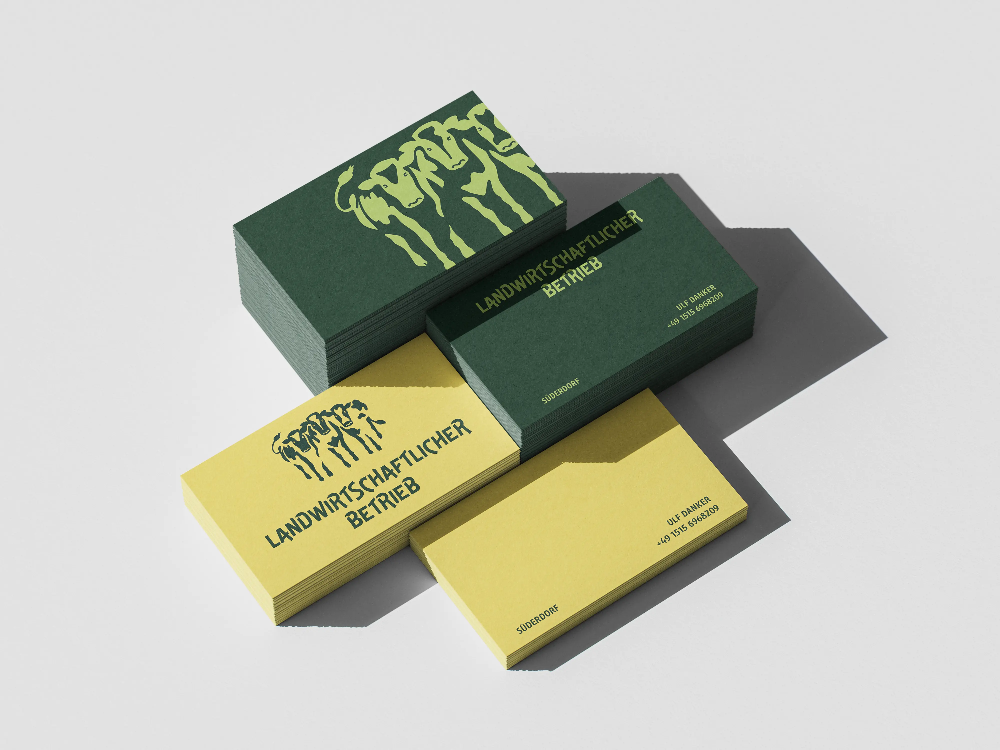
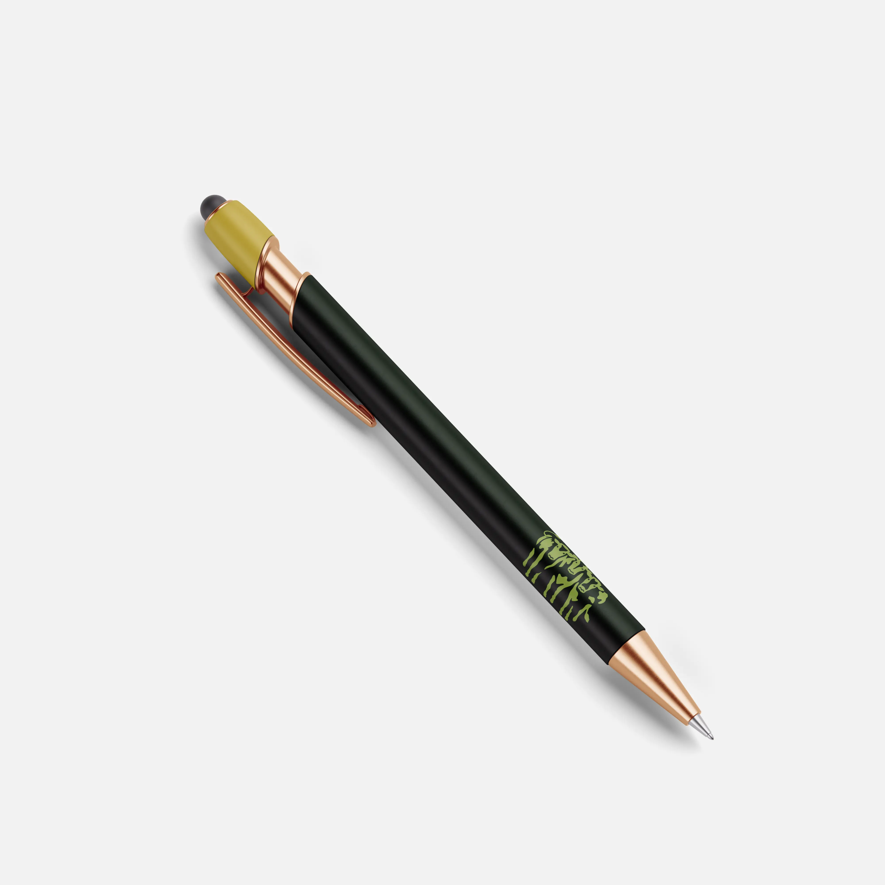

DANKER
GBR
„Für die Danker GBR entstand ein authentisches Erscheinungsbild, das die Werte des Betriebs visuell transportiert- regional, eherlich und verbunden mit Natur und Tier“




„Für die Danker GBR entstand ein authentisches Erscheinungsbild, das die Werte des Betriebs visuell transportiert- regional, eherlich und verbunden mit Natur und Tier“